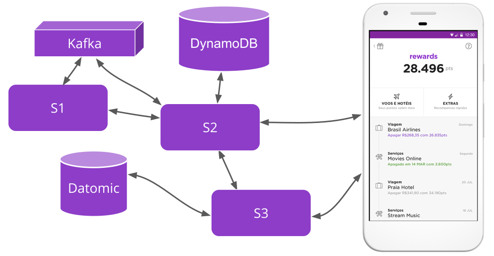
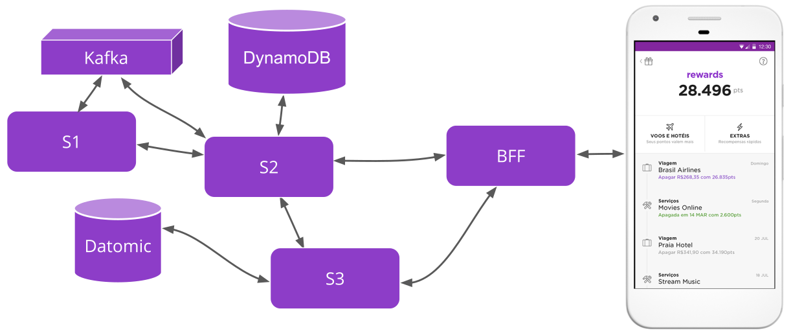
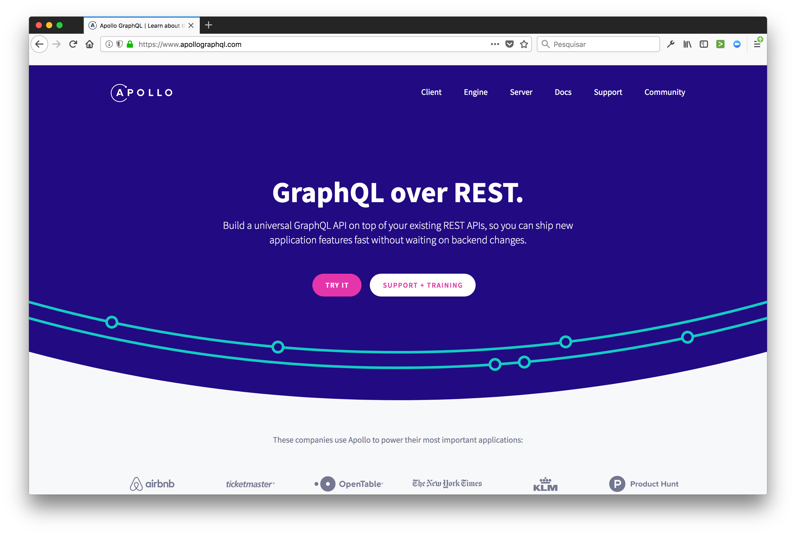

Consumindo GraphQL + gerenciando estado utilizando Apollo
Marina Limeira
Engenheira de Software @ Nubank
Ciência da Computação @ PUC-SP
marinalimeira.comCartão
NuConta
Rewards
disclaimer
Baseado na experiência com React Native
Tentarei abstrair o máximo que eu puder :)
micro-serviços 💜

micro-serviços 💔
Backend for front-end (bff)
Backend for front-end (bff)
Abrams (Shuffle - backoffice)
Shore (Shell - novo app)
Stormshield (Ghostflame - Nuconta)
GraphQL
Query language para APIs
Agnóstico a linguagem, tanto pra cliente quanto pra servidor
Schema funciona como um contrato entre o cliente o servidor
type Item {
name: String!
price: Int!
quantity: Int
}
type Storage {
items: [Item]
}
Queries
Equivalente ao GET do REST
Queries
query {
items {
name
price
}
}
Queries
{
"data": {
"items": [
{
"name": "Poké Ball",
"price": "200"
},
{
"name": "Super Potion",
"price": "200"
}
]
}
}
Queries
{
"data": {
"items": null,
},
"errors": [
{
"message": "Quantity must be bigger than 0!",
"locations": [
{
"line": 2,
"column": 3
}
}
]
}
Mutation
Equivalente a POST/PUT/PATCH/DELETE
do RESTMutation
mutation {
buyItem(input: { name: 'Poké Ball', quantity: 10}) {
success
}
}
Apollo
Apollo
Cliente
Servidor
apollo-link-state
Mesma finalidade do Redux ➡ estado global
É possível utilizar mesma query para dados locais e do servidor
Single source of truth
apollo-link-state
query {
items {
name
price
quantity
}
shopping @client {
quantity
}
}